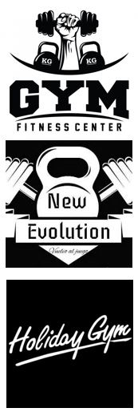

SEDENTARISMO OUT
email
admin@sedentarismoout.com
phone
+3460616161
Inicio
Cuestionario
Estdisticas
Datos Personales
Nombre y Apellidos
Edad
Provincia
Australia
Canada
USA
España
Italia
Tipo de Actividad Laboral
¿Cuándo tiempo suele pasar sentado o recostado en un día típico? (Horas : minutos)
Ejericio en la Actividad Laboral
En una semana típica, ¿cuántos días realiza usted actividades físicas intensas en su trabajo?
En uno de esos días en los que realiza actividades físicas intensas, ¿cuánto tiempo suele dedicar a esas actividades?
En una semana típica, ¿cuántos días realiza usted actividades de intensidad moderada en su trabajo?
En uno de esos días en los que realiza actividades físicas de intensidad moderada, ¿cuánto tiempo suele dedicar a esas actividades?
Ejericio en los desplazamientos diarios
¿Camina usted o usa usted una bicicleta al menos 10 minutos consecutivos en sus desplazamientos?
Si
NO
En una semana típica, ¿cuántos días camina o va en bicicleta al menos 10 minutos consecutivos en sus desplazamientos?
En un día típico, ¿cuánto tiempo pasa caminando o yendo en bicicleta para desplazarse?
Ejericio en el tiempo libre
¿En su tiempo libre, practica usted deportes/fitness intensos que implican una aceleración importante de la respiración o del ritmo cardíaco como [correr, jugar al fútbol] durante al menos 10 minutos consecutivos?
Si
NO
En una semana típica, ¿cuántos días practica usted deportes/fitness intensos en su tiempo libre?
En uno de esos días en los que practica deportes/fitness intensos, ¿cuánto tiempo suele dedicar a esas actividades?
Gimnasios
